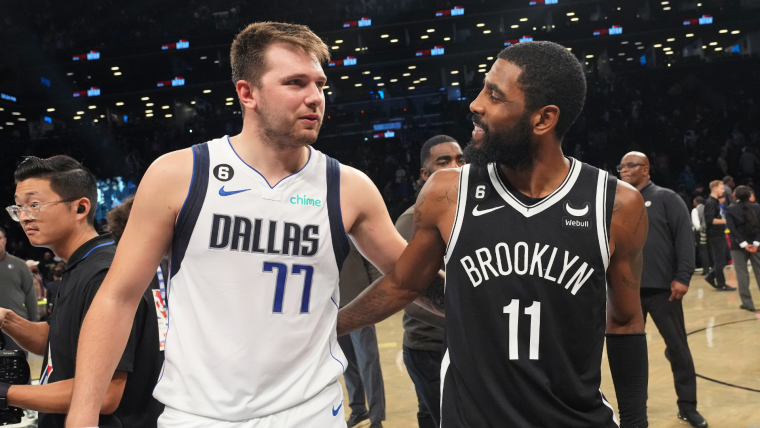

¿Tiene sentido juntar a Luka Doncic y Kyrie Irving?
El encaje en Dallas Mavericks después del traspaso

Kyrie Irving volvió a causar un seísmo en la NBA con una petición de traspaso que terminó en su salida de Brooklyn hacia Dallas
a cambio de Dorian Finney-Smith, Spencer Dinwiddie, un pick de 1° Ronda y otras dos selecciones de 2° Ronda.
Dallas llevaba mucho tiempo monitoreando el mercado para encontrar a un jugador que pueda ayudar a Doncic en la dirección del equipo.
El esloveno está registrando la mayor tasa de uso de toda su carrera (37,6), lo que equivale a la séptima más alta en la historia de la NBA.
Una circunstancia que puede terminar por costarle una lesión o bien un descenso repentino en su rendimiento por fatiga acumulada.
Las opciones de los Mavericks en ese sentido estaban muy limitadas hasta la noticia de Irving, pero los texanos actuaron rápido le ganaron la pulseada a los Lakers.
La llegada de Kyrie Irving lo cambia todo para Luka Doncic, quien compartirá equipo con un jugador de ese calibre por primera vez en su carrera NBA.
¿Pero cómo encajan ambos jugadores? ¿Tiene sentido unir a dos manejadores de alto uso como Doncic e Irving? Es momento de analizarlo.
Uno de los aspectos que definen a Luka Doncic es su increíble visión de juego. Con su altura alcanza
a ver líneas de pase que otros bases no, a lo que cual hay que unir un físico que le permite llegar al
aro o bien jugar al poste bajo. El esloveno es un tirador sobre bote bastante peligroso (49% de dos,